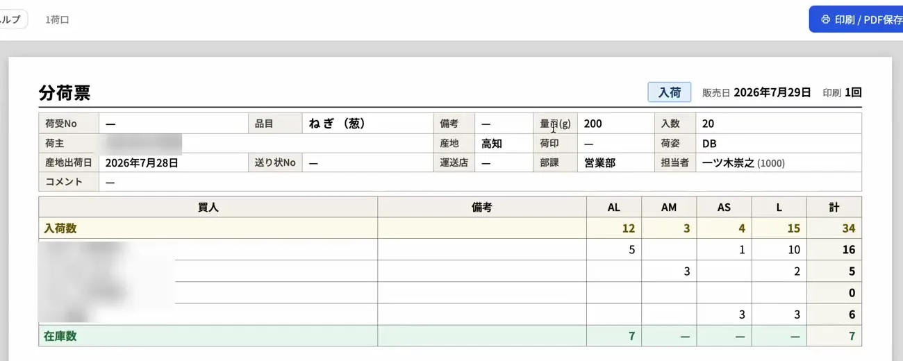

FEATURE
青果市場の帳票システム
― 分荷票・送り状・販売票・仕切票を入力からそのまま出力
青果卸売市場では、分荷票・送り状・販売票・仕切票など、毎日たくさんの帳票を作ります。本ページでは、青果市場の帳票の種類と現場の課題、システムにするときのポイント、そしてベジワークの営業管理システム「vegework」で出せる帳票を紹介します。
01青果市場の帳票
青果市場の帳票は、大きく「現場で使う帳票」と「取引が確定してから出す帳票」に分かれます。
| 帳票 | 出す時期 | 主な相手・使い道 |
|---|---|---|
| 分荷票 | 分荷のとき | 市場の現場（どの荷を、どの買人へ、いくつ回すか） |
| 送り状 | 分荷のとき | 買人（届ける荷の明細） |
| 現場用販売票 | 分荷のとき | 現場で販売する買人 |
| 販売票 | 取引の確定後 | 買人への売上の記録・販売管理システムへの入力 |
| 仕切票 | 仕切の確定後 | 産地（荷主）への支払いの知らせ・販売管理システムへの入力 |
02帳票の現場の課題
- 手書きと転記が多い。分荷の内容を紙に書き、それを見ながら送り状を書き、さらに販売管理システムへ打ち直す――。同じ内容を何度も書き写すほど、時間と間違いが増えます。
- 書式が市場ごとに違う。帳票の項目や並びは、市場や取引先ごとに決まっていることが多く、汎用の帳票では合いません。
- 出し忘れや二重の発行が起きる。どの帳票を出したかを紙で管理していると、出し忘れや同じ帳票の二重発行が起きがちです。
- 一部だけ出したいときに手間がかかる。特定の買人や荷口の分だけ出し直したいときに、全部を出し直すのは手間です。
03帳票をシステムにするときのポイント
- 入力からそのまま出せるか。分荷や価格登録で入れた内容から、書き写さずに帳票が出ることが一番の効果です。
- 市場の書式に合わせられるか。今お使いの帳票の項目や並びに合わせられると、現場も取引先も迷いません。
- 必要な分だけ選んで出せるか。買人や荷口を選んで出せると、出し直しの手間がなくなります。
- 出し忘れを防げるか。まだ出していない帳票がひと目でわかると安心です。
- 販売管理システムへ入れやすい形か。販売票や仕切票の並びが販売管理システムと同じなら、経理の入力が速く、正確になります。
04vegework で出せる帳票

- 分荷票。品目ごとに、その日の分荷を荷口ごとにまとめて出せます。出す荷口を選んだり、入荷の分と在庫の分を分けて出したりできます。
- 送り状。買人ごとに1枚の送り状を出せます。出す買人は一覧で選べ、選んだ買人は次に開いたときも覚えています。同じ内容の行は1行にまとまり、数量・単価・コメントはその場で直せます（元の分荷のデータは変わりません）。受領書などの控えの書類も、選んで一緒に出せます。
- 現場用販売票。現場で販売する買人向けに、買人と等階級ごとに1枚ずつ出せます。
- 販売票・仕切票。承認が終わった取引から出せます。まだ出していない件数が画面に表示されるので、出し忘れを防げます。まとめて印刷でき、再印刷もできます。印刷の前には枚数を照らし合わせ、不足があれば知らせます。等階級は販売管理システムのマスタの並び順で印字されるため、経理が入力するときに読み替えが要りません。
- PDF でも保存。どの帳票も、印刷のほか PDF で保存できます。
帳票の元になる入力は、青果市場の分荷システム、価格登録・承認システム、仕切システムの各ページで紹介しています。
05導入の進め方
帳票の書式は、市場や取引先ごとに違います。vegework の導入では、今お使いの帳票を拝見し、項目や並びを合わせて作ります。紙や Excel で作っている帳票も、業務ごとに段階的に切り替えていけます。
06よくある質問
Q. 今使っている帳票の書式に合わせられますか？
はい。今お使いの帳票の項目や並びを伺い、貴社の書式に合わせて作ります。
Q. 一部の買人だけ送り状を出せますか？
はい。送り状の画面で、出す買人を一覧から選べます。選んだ買人は次に開いたときも覚えているため、毎日同じ選び方をする手間もかかりません。
Q. 帳票の出し忘れを防ぐ仕組みはありますか？
販売票・仕切票は、まだ出していない件数が画面に表示されます。まとめて印刷できるので、出し忘れを防げます。
Q. 紙に印刷せず、PDF で保存できますか？
はい。どの帳票も、印刷のほか PDF で保存できます。
帳票のシステム化や、今の書式に合うかどうかのご相談も承っています。お気軽にお問い合わせください。
資料請求・お問い合わせはこちら →